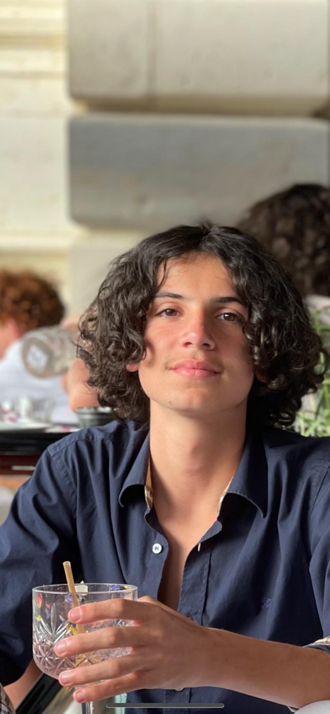

Bonjour, à travers ce portofolio, je vais vous exprimer différentes choses à travers ce que j'ai produis dans ma vie. c'est-à-dire mes compétences, mes passions, mon sport, pourquoi j'ai choisi ce BUT puis ma vision pour mon futur professionnel.
Tout d'abord, je me presente je m'appelle Oscar Bouriot, j'ai 17 ans bientôt 18, le 14 novembre. je suis actuellement au BUT R&T de L'IUT de Blagnac. 